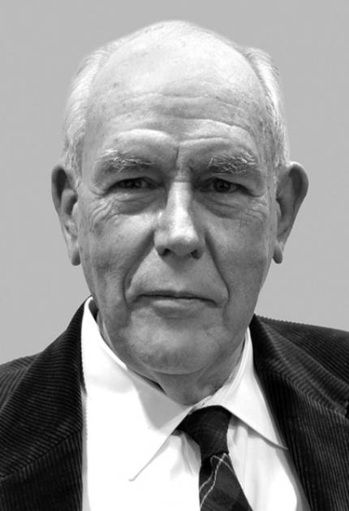
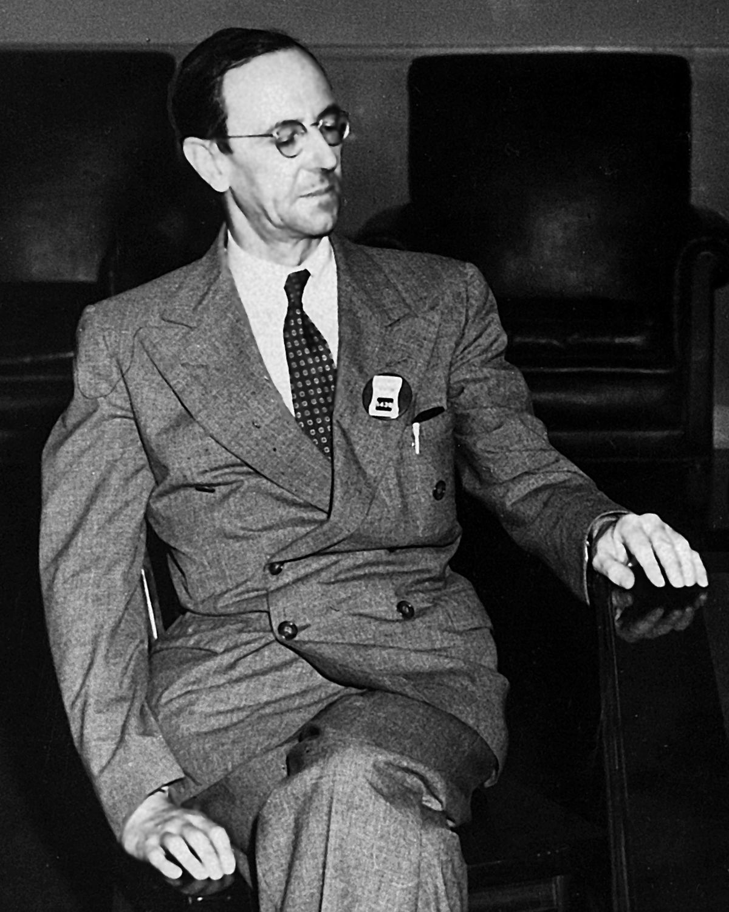

Este jogo da forca traz informações sobre os projetos que trouxeram alguns ganhadores do Prêmio Nobel e Prêmio Turing, de forma divertida e interativa.
Este jogo do Mario traz uma interação muito legal entre os jogadores que podem competir para ver quem consegue sobreviver mais tempo. Como jogar: Player 1 - Use as teclas W,A,S,D para se movimentar e Player 2 - Use as setas para se mexer.
Patrick M. Hanrahan é um cientista de computação gráfica, professor de ciência da computação e engenharia elétrica na Universidade Stanford, Califórnia. Sua pesquisa é focada em algoritmos de renderização, GPU's, bem como ilustração e visualização científica.Wikipedia
Ivan Edward Sutherland é um informático estadunidense. É um dos pioneiros da Internet. Desenvolveu o Head-Mounted-display, em 1968. Criou o Sketchpad, em 1963, uma aplicação gráfica inovadora. Em 2012 recebeu o Prêmio Kyoto por "realizações pioneiras no desenvolvimento da computação gráfica e interfaces interativas".Wikipedia
James Chadwick foi um físico britânico, colaborador de Ernest Rutherford. Seu principal contributo para a ciência foi a prova da existência do nêutron. Por esta descoberta, foi-lhe atribuído o Nobel de Física em 1935.Wikipedia

Marie Skłodowska-Curie, nascida Maria Salomea Skłodowska, foi uma física e química polonesa naturalizada francesa, que conduziu pesquisas pioneiras sobre radioatividadeWikipedia

Nikola Tesla foi um inventor, engenheiro eletrotécnico e engenheiro mecânico sérvio, mais conhecido por suas contribuições ao projeto do moderno sistema de fornecimento de eletricidade em corrente alternada.Wikipedia

Timothy John Berners-Lee KBE, OM, FRS é um físico britânico, cientista da computação e professor do MIT. É o criador da World Wide Web, tendo feito a primeira proposta para sua criação a 12 de março de 1989.Wikipedia